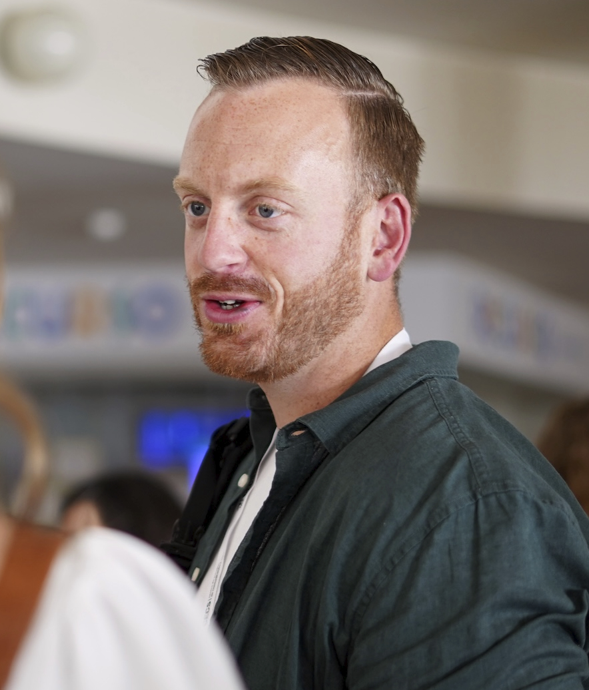

Health and persuasive communication
Postdoctoral researcher, Persuasive Communication, Amsterdam School of Communication Research (ASCoR), University of Amsterdam
m.p.jansen@icloud.com Open Science Framework LinkedInUniversity website

About
I study how people meet, discuss, and respond to health-related and persuasive messages online.
I currently work at the University of Amsterdam on gambling among young people, with a focus on care uptake: what leads adolescents to seek help for gambling problems, and how their personal, social, and wider environment shape that step.
Before that, as a postdoc at Radboud University, I worked on the SENTENCES project. We studied how Dutch cancer screening programmes appear in news coverage, on X/Twitter, and on an online forum, and where misinformation enters those conversations.
I completed my PhD at the University of Duisburg-Essen in 2024 (magna cum laude) on political microtargeting and targeting transparency. I work with colleagues from linguistics, communication science, data science, and computer science, and I preregister my studies and share materials, data, and code on the Open Science Framework.
In the media
- ‘Bevolkingsonderzoek wordt gezien als een noodzakelijk kwaad’, DOQ, 15 October 2026.
- ‘TikTok Shop is een verleidingsmachine voor jonge gebruikers’, Trouw, 8 September 2026.